morly旅游网
五色海又名登崇措，舍利海一意为吉祥海，五色海由于光的折射下，产生五种不同颜色而得名:其真名为"单增措"，它位于仙乃日与央迈勇之间，海拔4600米，湖面呈圆形。面积0.7公顷，现代冰谷下伸至湖畔，雪山倒影湖面，呈现奇幻的色彩。是藏区著名的圣湖(佛经中赞誉该湖与西藏羊卓雍措齐名),据传能"返演历史，预测未来"。有很多宗教上的传说。
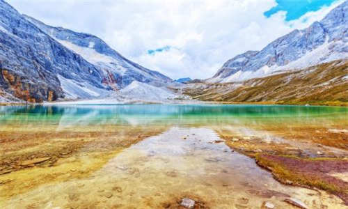 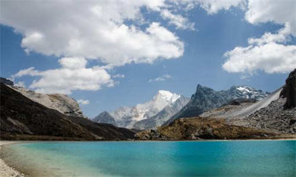在当地人心目中，五色海是一个神湖，能"返演历史，预知未来"。佛经中赞誉该湖与西藏的高原圣湖羊卓雍错齐名，有很多宗教传说。五色海在牛奶海右侧的一个陡坡之后，如果没有当地人指点，很难找到。
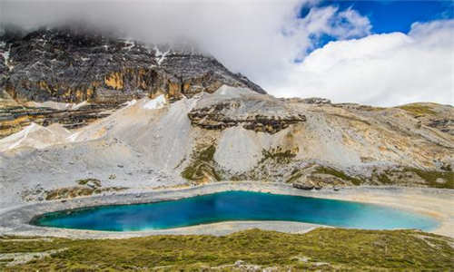 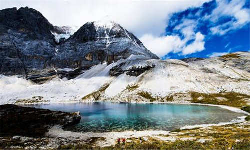五色海藏语名为：木底措，位于牛奶海上方，仙乃日与央迈勇之间。因在阳光照射下，产生五种不同的颜色而得名。 ·五色海海拔4500米，在牛奶海右侧的一个陡坡之后，湖面呈圆形，湖水清澈，在阳光的照射下，折射出五彩光芒，殊为壮观。
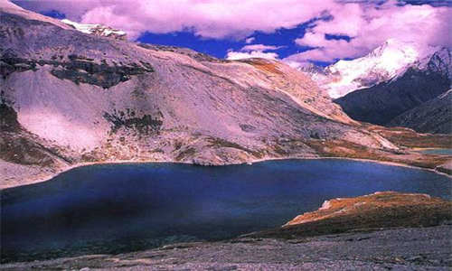 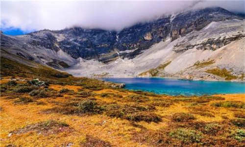传说
传说很久以前，珠穆朗玛峰上的长寿五仙女中的寿祥仙女---扎西泽仁玛，东来探望姑母贡嘎神女。她游遍雪山胜景，一天来到”登托那“（跑马山）后山海子玩，见海子景色宜人，山色耸翠诱人，十分高兴。于是将五彩箭置于海东，火焰聚宝盆置于海之西。一瞬间海子里呈现出五彩缤纷的色彩，海子因此而得名”五色海“。
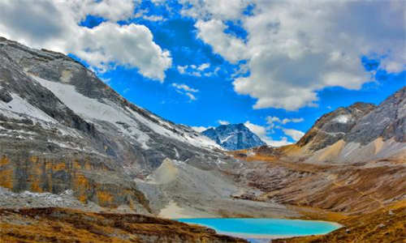 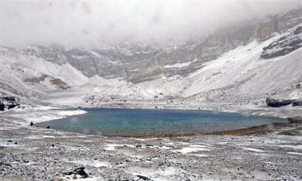后来扎西泽仁玛与郭达山神当京多吉列巴相爱，双双变成金鸭子在五色海中嬉戏。每当十五月圆之夜，那对金鸭游出水面击波拨浪，湖里顿时霞光万道，五彩缤纷。后来一个贪婪凶狠的外国传教士来到湖边，想盗走这对金鸭，结果触怒山神，一场倾盆的雪弹把他砸死在海边了。
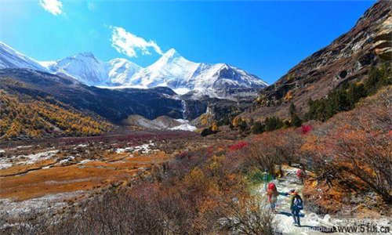 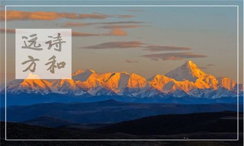景色
五色海从跑马山脚左侧近泥巴山或驷马桥处上山，穿过杜鹃花、红白刺玫花丛错落的山径，到了海拔4100米的冰川遗迹--五色海。五色海面积0.11平方公里，三山陡峭环立。东山崖上瀑布飞流，珍珠万颗直泻湖中，湖水澄澈似镜，朝阳初临，瑞气四集，飞瀑倒映湖中，山形呈玉兔，傍晚捧佛隐去，清晨阳光出霞，五彩缤纷。这是一处被人忽略的自然经典，因为未开发所以正好，没有一点被破坏。同时相传这里是康藏某位活佛修炼得道之地，充满了吉祥宗教的向往。
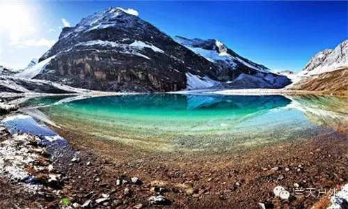 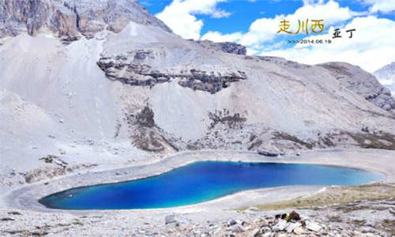内容整理至网络，如有侵权，请联系我们！1255394075@qq.com